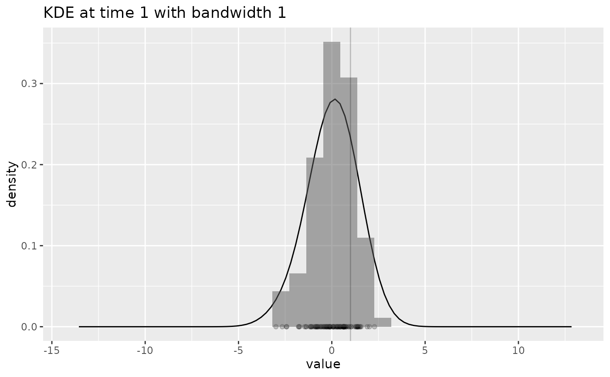

Plot the KDE used in log_score()
plot_KDE.RdCreate a plot displaying the density function calculated by the Kernel Density Estimation (KDE), for the specified time in the forecast.
Usage
plot_KDE(
fcst,
obs = NULL,
at = NULL,
after = NULL,
bw = NULL,
from = NULL,
to = NULL,
n = 101,
binwidth = NULL
)Arguments
- fcst
A forecast object (see output of
create_forecast()).- obs
(Optional) An observations data frame. Data from if will be included in the graph if provided
- at
(Optional) See
?log_score- after
(Optional) See
?log_score- bw
(Optional) See
?log_score- from, to
(Optional) The range over which the density will be plotted
- n
(Optional) How many points to calculate the density for
- binwidth
(Optional) The binwidth for the histogram. Not to be confused with
bw, which stands for bandwidth and is unrelated.
Details
Creates a plot containing:
The density curve at the given time calculated by the KDE
The forecast data points at the given time, along the x-axis
A histogram of the density of the forecast data points
A vertical line showing the observation at the given time (if provided)
Examples
withr::with_seed(42, {
dat <- rnorm(100)
fc <- create_forecast(dplyr::tibble(time=rep(1,100), val=dat), forecast_time=1)
obs <- data.frame(time=1, val_obs=1)
plot_KDE(fc, obs, at=1)
plot_KDE(fc, obs, at=1, bw=0.1)
plot_KDE(fc, obs, at=1, bw=1)
})
#> `stat_bin()` using `bins = 30`. Pick better value with `binwidth`.
